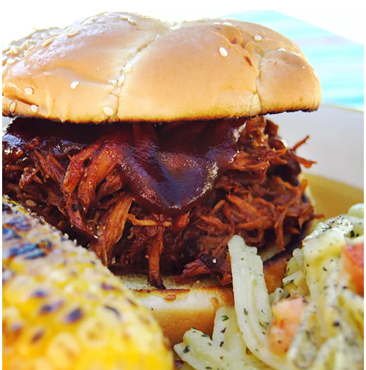

Description
This pulled pork recipe is tender, juicy, and oh-so flavorful — and it’s incredibly easy to make in your slow cooker!
Ingredients
- Oil
- Pork
- Sauces
- Apple cider vinegar
- Broth
- Brown Sugar
- Seasonings
- Onion
Steps
- Pour oil into the slow cooker, then place the roast on top of the oil.
- Add the remaining ingredients to the Crock-Pot.
- Cover and cook until the pork shreds easily.
- Shred the pork and return it to the slow cooker to combine it with the juices.
- If you’re making sandwiches, serve the pulled pork on buttered buns.